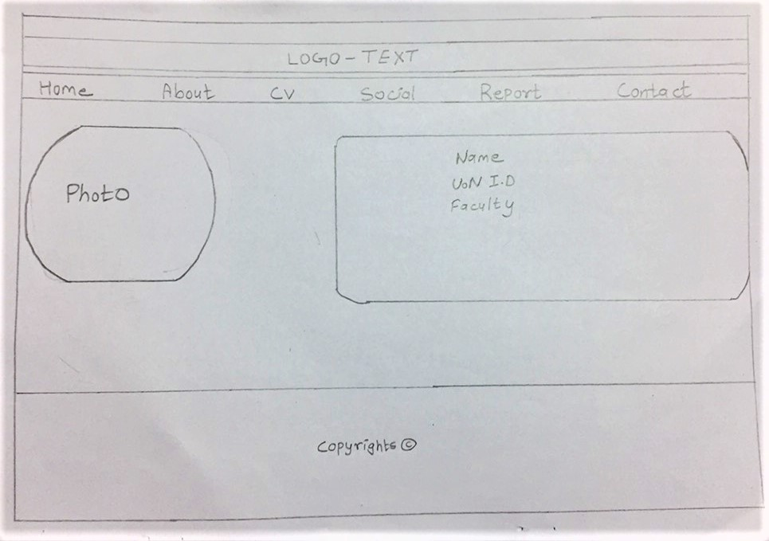
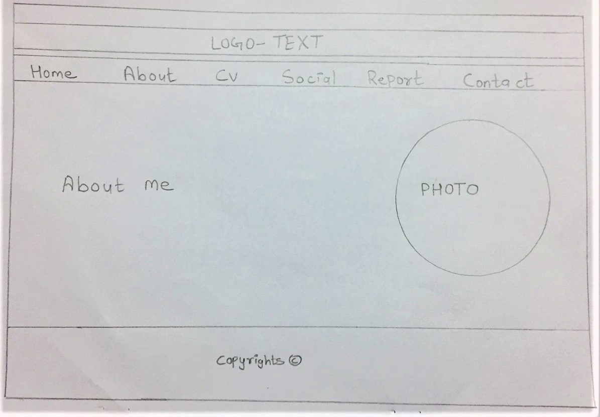
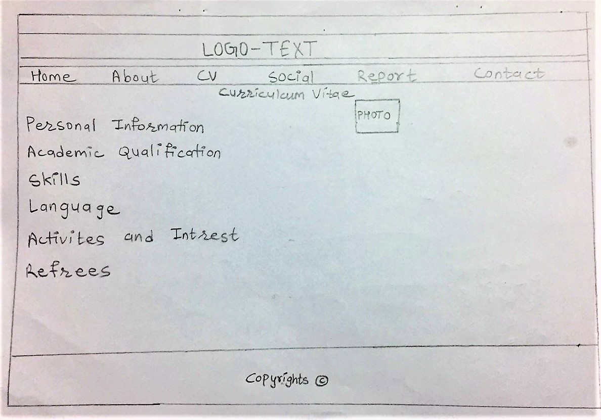
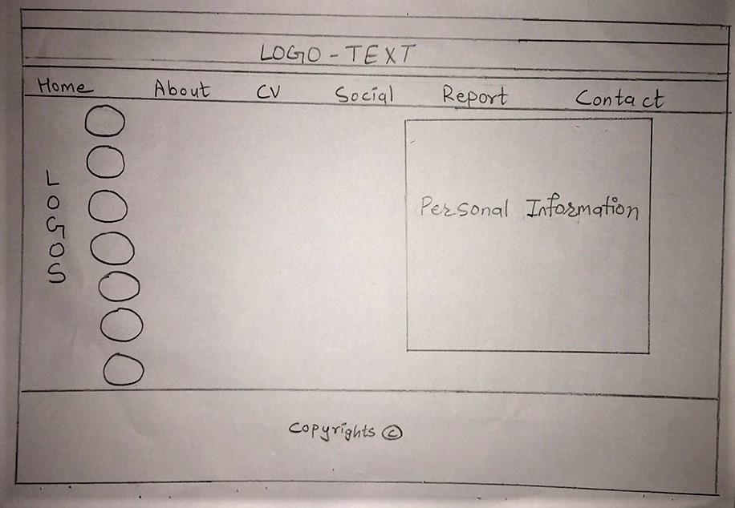
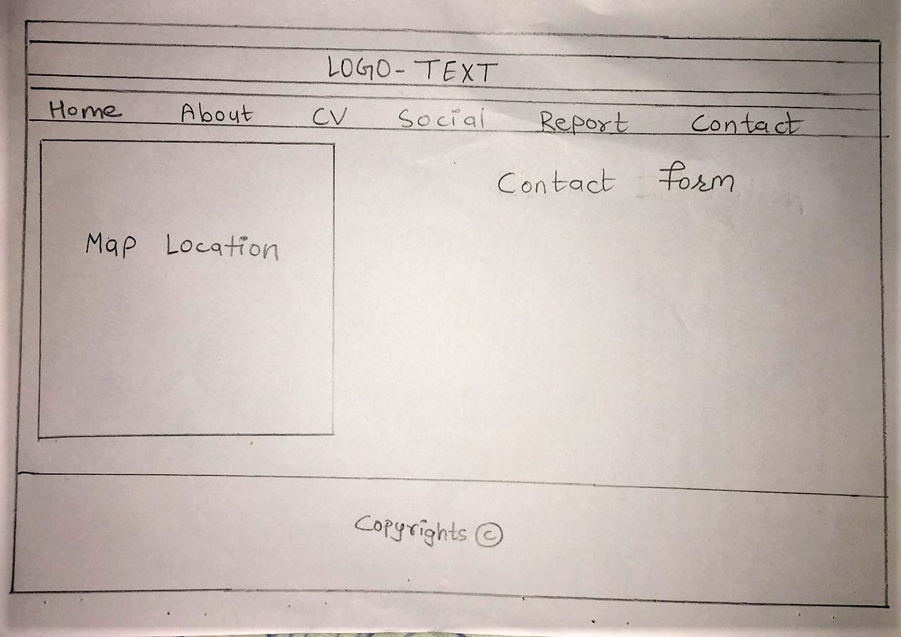

Introduction
This project of web development was given to students to use what they learned in lectures of first term. We were supposed to develop our personal CV website from scratch. I created this website using the knowledge I had from my lecture class and lot more of research to add specifications in the system. We were meant to create Homepage, about, CV, Social, Contact and Report. Home page is landing page of my website. About page includes a little about me, CV; which includes my Curriculum Vitae, Social; which includes all the social sites where people can reach me, Contact; where my location is embedded through Google map and a contact form, and finally report section. By use of this website people can contact me with my information, see my CV and know a bit more about me.
Experience
This project of web development was given us to use what we learned in Web development in first term. We were supposed to do this assignment individually. While doing this assignment I learned more about HTML and CSS from what I had learned in class. While starting this assignment I was worried about how I was going to complete it but as time passed by, from the researches and suggestions from tutor helped me a lot to work in this project. I revised all the teaching materials from lectures so that I can grasp ideas from them. I also did researches on the design and specification of CV websites. But, the coding is done solely by me. This project gave me more ideas about making responsive websites, designs, color schemes, animations and lot more. For small about of time doing this project I was skeptical about what I was doing and how I was doing it. I didn’t feel like my project was good enough as others but I did what I thought was going to be best for me slowly everything came along. Overall, my experience from this project was good than I expected. I am happy with the resources I got to broaden my knowledge about HTML and CSS. I went into this project with basic level knowledge and came out becoming confident with lot more knowledge and enough to carry more projects like this in future; in academic or in real field.
Design
Design is really important part in any developement project. For this project as well the planning of design was done firstly before coding. The wireframes of web design before developing are shown below:
Wireframe of landing page:

This is the wireframe of about page:

This is the wireframe of CV page:

This is the wireframe of Social page:

This is the wireframe of Contact page:

The website is made for good experience of users and high usability of the system. The system is responsive and include UI designs. The mockup of website are below which was developed after wireframes.
This is screen design of homepage:

This is screen design of about page:

This is screen design of CV page:

This is screen design of Social page:

This is screen design of Contact page: